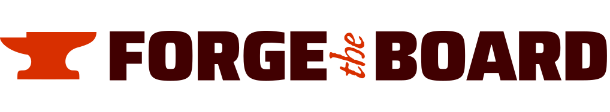
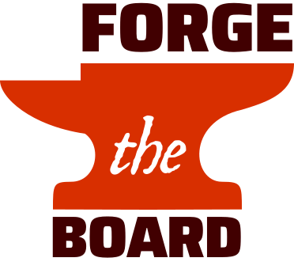

Logotyp i znak

Poziomy logotyp z nagłówka i stopki

Jasny plik marki do ciemnej powierzchni
Sygnet · istniejący favicon i znak w interfejsie

Ikona aplikacji · dostarczony SVG
Wersję piętrową „FORGE / the / BOARD” pokazuje moodboard, m.in. na czapkach i w makiecie telefonu. Pozioma wersja mieści się w pasku nawigacji, a ikona aplikacji zawiera pełny napis FORGE / the / BOARD. Zachowuj proporcje plików i dobieraj wersję do koloru powierzchni. Przed eksportem ikony sprawdź czytelność przy 16, 32 i 64 px oraz maski docelowej platformy. Moodboard marki
Moodboard marki
Logotyp na ścianie recepcji
Kufle z logotypem
Bordowa i kremowa czapka
Figurka z logotypem na tarczy
Snowboard
Bordowa torba
Koszulka gracza
Logotyp na samolocie
Ikona aplikacji na telefonie
Hero z wygaszeniem ilustracji
Ilustracja wypełnia tło hero od krawędzi do krawędzi. Główny motyw jest widoczny po prawej, a po lewej obraz płynnie przechodzi w papier pod tekstem. Na telefonie obraz odsłania się pod tekstem. Podstrony mają niższe hero. Strona główna i listing używają mapy, a szczegóły karty pokazują jej ilustrację.
CartoVox wygasza atlas pod lewą kolumną i pokazuje jego szczegóły po prawej. Niżej daje mapie ramę interfejsu. Dla Forge the Board te dwa kadry mogą połączyć się w istniejącym przejściu podczas przewijania.
Wykuj swoją grę
Od pierwszej iskry do własnego świata
Na desktopie próbę zacząłbym od zatoki lub wyspy po prawej stronie nagłówka. Przy zwężaniu kadru ten obszar przesuwa się bliżej środka. Na telefonie tekst jest u góry, a mapa odsłania się pod nim. Do oceny w ruchu zostaje zakotwiczenie punktu w rzeczywistym obrazie podczas zmiany skali. CartoVox · prezentacja aplikacji
Ikony warsztatu · wariant projektowy
Ten wariant pokazuje wybór za pomocą ikon. Strona główna używa numerów, opisów i akcentu żaru. Zobacz zakładki na stronie głównej
W Inkling rozpoznawalna sylwetka stempla ma podpis, a wybór i fokus mają osobne obrysy. W Forge the Board ten układ pasuje do trzech istniejących opcji. Bordowe tło i jasna ikona wyróżniają zaznaczoną opcję. Proste ikony ułatwiają skanowanie wyboru, a pełne szkice zachowują szczegóły w większych kadrach.
Proponowane parametry ikon to pole 24 × 24 px i kreska 1,5 px. Pomarańczowy obrys sygnalizuje wybór, a ciemny obrys odsunięty od przycisku wskazuje fokus. Inkling · demo mapy
Kolor i typografia
Papier · #F5EFE2
Główne tłoCiemniejszy papier · #E9DFC9
Ramy i powierzchnie wtórneBordo · #410001
Nagłówki, tekst i ciemne paneleŻar · #D82F00
CTA, wybór i krótkie akcentyTekst pomocniczy · #796859
Opisy i podpisySzałwia · #B5B79B
Kolor uzupełniający w palecie CSS
Wartości kolorów i rodziny pochodzą z styles.css. Proponowana skala porządkuje zastosowania w przykładach poniżej.
Paleta katalogu. Szałwia dla sojuszników (#DCE9D9 / #305840), miód dla miejsc (#F6E1AC / #6D480B) błękit dla przygód (#D9E9F2 / #264E72) i papier dla przedmiotów (#E9DFC9 / #796859). Bordo oznacza aktywny filtr. Bordo wyróżnia też przycisk zapisu, bieżącą stronę i wybór w polach formularza. Etykiety i znaczniki przekazują tę samą informację tekstem lub kształtem.
Wykuj swoją gręSaira 800 · hero · 34–72 px w przykładzie
Twój warsztatSaira 700 · tytuł sekcji · 32 px
Każda przygoda potrzebuje swojego miejsca.
Saira 400 · tekst główny · 16 px, interlinia 1,6Od pierwszej iskry do własnego świataIM FELL kursywa · krótkie wprowadzenie lub podpis · 24 px
Proponowane odstępy do składania nowych ekranów to 4, 8, 12, 16, 24, 32 i 48 px. Grupuj opis z jego etykietą, a między rodzinami komponentów zostaw większą przerwę. Utrzymuj pełne podpisy na wąskim ekranie.
Przyciski z charakterem kuźni
Przyciski mają prostokątny kształt i proste narożniki. Najedź na przycisk lub użyj klawisza Tab.
Hover przyciemnia powierzchnię, unosi CTA o 2 px i uruchamia pojedynczy mały zamach młotka. Wciśnięcie opuszcza przycisk, a fokus otrzymuje obrys. Ustawienie ograniczenia ruchu wyłącza animację. Minimalna wysokość wynosi 56 px. Długi podpis może się zawijać.
Komponenty i stany
Proponowany rozmiar kontrolek to co najmniej 44 px wysokości w przykładach. Sprawdź kontrast etykiet i stanów, czytelny fokus oraz kolejność Tab przed wdrożeniem. WCAG · Wzorce interakcji APG
Filtrowanie, etykiety i karty
Podgląd talii „Wybrzeża Gryfów”. Wybierz typ karty lub przejdź na drugą stronę, żeby zobaczyć pozostałe karty. „Szczegóły karty” otwierają widok z zasadą i przyciskiem „Zapisz”.
Otwórz pełny listing kart
Chipsy i etykiety
„Wszystkie” jest aktywne na starcie. Pozostałe filtry to Miejsce, Sojusznik, Przygoda i Przedmiot. Aktywny chips ma bordowe wypełnienie z jasną nazwą. Etykieta typu na karcie łączy emblemat i nazwę.
Paginacja
„← Wstecz”, numer i „Dalej →” zmieniają stronę wyników. Bieżący numer jest bordowy. Na krańcach nie można przejść dalej w danym kierunku. Przy jednej stronie paginacja znika.
Ramka i animacja karty
 Twierdza Brzasku z listingu kart
Twierdza Brzasku z listingu kart
Ramka według kategorii
Pełna obwódka ma 24 px grubości i promień 12 px. Jej kolor odpowiada kategorii karty. Na każdym boku znajdują się małe kowadła z logo. Ich podstawy są skierowane do wnętrza karty, odstęp wynosi około jednej szerokości znaku, a ornament wygasa przy końcach boków. Ikona i podpis wskazują typ karty.
Od malunku przez szkic do malunku
W spoczynku widać gotową kolorową ilustrację. Najechanie lub fokus klawiatury uruchamia jedno przejście trwające około 750 ms. Kolor ustępuje papierowi z mocną, ciągłą kreską w kolorze ramki, potem wraca malunek. Na dotyku i przy ograniczonym ruchu ilustracja pozostaje statyczna.
Sprawdź animację na listingu kart
Ołówkowe ilustracje
Dziewięć szkiców użytych na stronie głównej. Na niej i na podstronach z przewagą tekstu szkice mogą pojawiać się przy krawędziach sekcji, w niskim kryciu i z wygaszeniem ku tekstowi. Listing i szczegóły kart mają spokojne papierowe tło treści oraz własne ilustracje w hero i kartach.
Tworzenie nowych szkiców
Pokazuj pojedynczy obiekt lub postać w ujęciu trzy czwarte. Buduj formę cienką, lekko drżącą kreską o zmiennym nacisku. Cienie twórz krótkim szrafowaniem i krzyżowaniem linii. Pozostawiaj drobne przerwy i dużo niezarysowanego papieru. Mocniejsze akcenty skupiaj przy ważnych krawędziach, twarzy i detalach mechanicznych.
Stosuj ciepłe monochromatyczne bordo lub sepię, przejrzyste tło i wyraźną sylwetkę. Przygotuj duży oryginał, zachowaj swobodny margines i oceń czytelność w docelowym rozmiarze. Gęstość kreski i detal dopasuj do zamku, czarodzieja i statku poniżej. Sekcja ze szkicami otrzymuje spokojne papierowe tło.